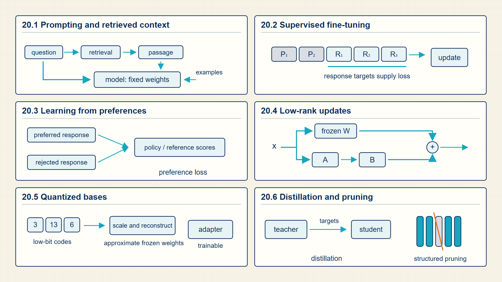
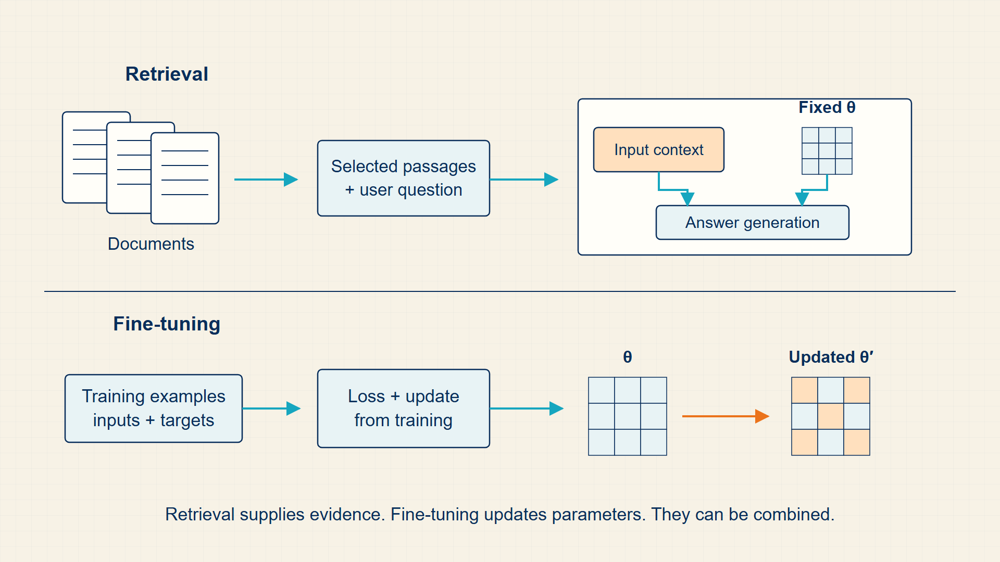
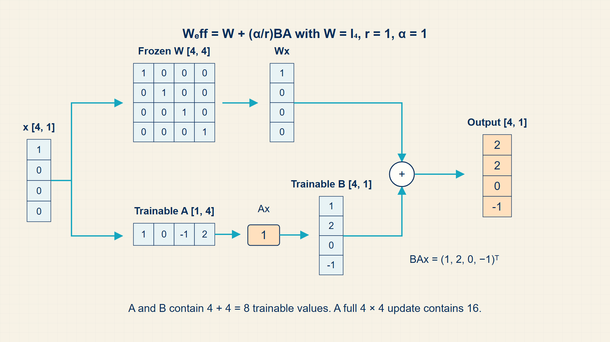
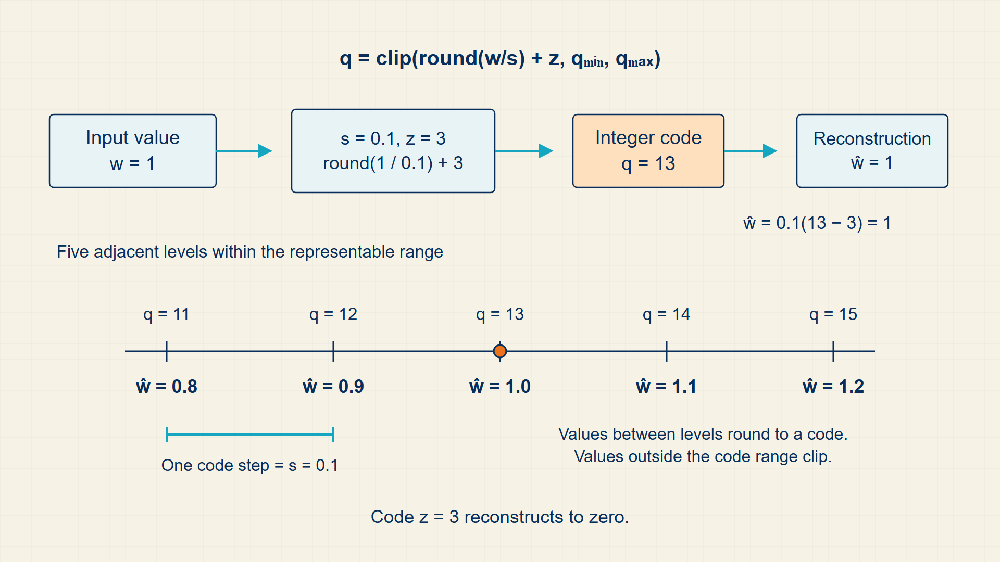

20 Low-Rank Adaptation and Preference Alignment
A pretrained model has broad language behavior but may not follow a particular task format or preference. Adaptation either supplies useful context at inference time or changes a limited set of trainable parameters.
Adaptation changes a pretrained model for a narrower task or behavior. Retrieval changes the input context; LoRA and QLoRA train a compact parameter update; preference methods rank outputs against human choices.
In code, transformers.Trainer runs supervised updates; peft.LoraConfig and get_peft_model attach adapters; bitsandbytes supplies low-bit base-weight loading for QLoRA.
Chapter 20 develops one required stage of the guide’s computation.

The numbered panels correspond to the chapter sections and show how each local result supplies the next operation.
20.1 Evaluating In-Context Prompting vs Parameter Updates
Fine-tuning continues training from a pretrained checkpoint on a more specific dataset. The goal is to change behavior without relearning language from scratch.
- Supervised fine-tuning: Training on input-output examples for desired behavior.
- Instruction tuning: Fine-tuning on instruction-response data so the model follows prompts.
- Catastrophic forgetting: Losing useful pretrained behavior during narrow adaptation.
Fine-tuning can teach format, domain vocabulary, tool-use patterns, or task-specific reasoning steps. It can also overfit quickly when the dataset is small or narrow.
The fine-tuning notebook in Module 2 frames this through practical adaptation tasks. Mathematically, the model is still minimizing token-level loss, but the data distribution is now targeted.
Instruction tuning stores each example as an instruction, an expected answer, and sometimes additional context. The tokenizer turns the combined text into input IDs; the loss mask selects answer positions so prompt tokens can condition the model without necessarily being supervised as outputs.
Supervised fine-tuning uses target answers directly. Preference alignment instead compares candidate responses. Reinforcement learning from human feedback (RLHF) trains a separate reward model. In contrast, Direct Preference Optimization (DPO) optimizes preferences directly from pair comparisons without an online reinforcement-learning loop.
- Use validation prompts that differ from training examples.
- Track both task success and general behavior.
- Keep learning rates smaller than typical pretraining rates.
- Record the base checkpoint and tokenizer exactly.
Prompting changes the input context; parameter adaptation changes a learned function. Retrieval adds external information without changing either base weight or tokenizer.
20.2 Choosing Between Retrieval Augmentation and Weight Adaptation
Retrieval-augmented generation adds evidence to the model input at inference, whereas fine-tuning stores a change in the model parameters.
- RAG: Retrieval augmented generation: supplying retrieved context at inference time.
- Alignment: Training and evaluation methods that steer behavior toward desired instructions, preferences, or constraints.
Retrieval-augmented generation is appropriate when the model needs access to changing facts or a large external knowledge base. The retrieved text becomes part of the prompt, so the base model can condition on information that was not stored in its parameters.
Fine-tuning is appropriate when the desired behavior is stable enough to encode in weights: style, task format, domain-specific decision boundaries, or instruction-following patterns. The mathematical difference is where the information enters the computation: retrieved context changes inputs, while fine-tuning changes parameters.
RAG changes the conditioning information without changing θ.
RAG conditional:
\[ P_{\theta}(y\mid\mathrm{prompt},\mathrm{retrieved\,context}) \tag{20.1}\]
where \(P_\theta\) is conditional probability assigned by the model with parameters θ; y is desired answer or output; prompt is original input supplied by the user; \(retrieved_{context}\) is text supplied by retrieval at inference time; θ is model parameters, held fixed in this comparison.
Fine-tuning changes the model parameters using task or instruction data.
Fine-tuned parameters:
\[ \theta\prime=\theta-\eta\nabla L_{\mathrm{task}}(\theta) \tag{20.2}\]
where θ’ is parameters after one task-training update; θ is parameters before the update; η is learning rate; grad \(L_{task}\)(θ) is gradient of the task loss with respect to the parameters.
Example: RAG conditional
If retrieved context raises the answer probability from 0.2 to 0.6, the conditional probability changes without changing model weights.
Example: Fine-tuned parameters
If \(\theta=1.0\), the gradient is \(0.4\), and \(\eta=0.1\), then \(\theta'=1.0-0.1\cdot0.4=0.96\).
When a task requires stable behavior in the weights, supervised adaptation supplies examples of the desired input-output relation.
20.3 Steering Model Behavior with Human Feedback and Reward Models (RLHF)
Preference optimization uses comparisons between candidate responses to change their relative probability under the model.
- Reward model: A learned scorer that estimates which response humans or another judge would prefer.
- RLHF: Reinforcement learning from human feedback: collect preferences, train a reward model, then optimize the policy against that reward.
- RLAIF: Reinforcement learning from AI feedback, where an AI system supplies some preference judgments.
- KL penalty: A term that discourages the updated policy from moving too far from a reference model.
- DPO: Direct Preference Optimization, a preference-training method that avoids an explicit reinforcement-learning loop.
Supervised fine-tuning teaches the model to imitate examples. Preference learning teaches the model to rank responses and avoid drifting too far from a useful base policy. This distinction matters for chat-style behavior because helpfulness and refusal behavior are often comparative rather than single-label targets.
In PPO-style RLHF, the policy generates responses, a reward model scores them, and a KL penalty keeps the new policy close to the reference model. DPO rewrites a preference objective so the policy can be optimized directly from preferred and rejected response pairs.
RLHF-style optimization trades reward against distance from a reference policy.
KL-regularized reward objective:
\[ \max_{\pi}\mathbb{E}[r_{\phi}(x,y)]-\beta\operatorname{KL}\!\left(\pi(\cdot\mid x)\mathbin{\|}\pi_{\mathrm{ref}}(\cdot\mid x)\right) \tag{20.3}\]
where \(r_\phi\) is reward model score; pi is updated policy; \(\pi_{ref}\) is reference policy; β is KL penalty weight.
The reward term encourages preferred behavior; the KL term limits how far the policy distribution moves.
The KL penalty is a stability and behavior-preservation term, not a task label.
DPO increases the preferred response relative to the rejected response while measuring both against a fixed reference policy.
DPO preference term:
\[ -\log\sigma\!\left(\beta\left((\log\pi_{\theta}(y_w\mid x)-\log\pi_{\mathrm{ref}}(y_w\mid x))-(\log\pi_{\theta}(y_l\mid x)-\log\pi_{\mathrm{ref}}(y_l\mid x))\right)\right) \tag{20.4}\]
where \(\pi_\theta\) is policy being trained; \(\pi_{ref}\) is frozen reference policy; \(y_{w}\) is preferred response; \(y_{l}\) is rejected response; β is preference strength parameter.
The policy is not compared only to itself. DPO compares how much the trained policy raises the winner over the reference policy, then subtracts the same reference-relative quantity for the loser.
The reference-policy terms keep the preference update tied to the base model distribution instead of rewarding any absolute increase in response likelihood.
Example: KL-regularized reward objective
If the reward is \(2.0\), the KL divergence is \(0.5\), and \(\beta=0.2\), then the penalized objective is \(2.0-0.2\cdot0.5=1.9\).
Example: DPO preference term
If the winner’s reference-relative log probability is \(1.5\), the loser’s is \(0.5\), and \(\beta=0.5\), then the sigmoid input is \(0.5(1.5-0.5)=0.5\).
Preference data changes which outputs are rewarded. Low-rank adaptation changes which small set of parameters can respond to that signal.
20.4 Adapting Model Weights with Low-Rank Matrices (LoRA)
Low-Rank Adaptation (LoRA) adapts a model by learning low-rank update matrices while freezing the original weights. Quantized Low-Rank Adaptation (QLoRA) combines low-rank adaptation with quantized base weights to reduce memory requirements.
- LoRA: Low-rank adaptation, a method that freezes the base weight matrix and trains two smaller adapter matrices.
- Rank: The inner dimension of the low-rank update.
- PEFT: Parameter-efficient fine-tuning, a family of methods that train only a small subset of added or selected parameters.
- QLoRA: Fine-tuning with a quantized base model and trainable low-rank adapters.
- Frozen base weight: The pretrained matrix W, stored for the forward pass but not updated by the optimizer.
- Adapter width: The inner dimension r of the two LoRA matrices; a small r limits the update’s rank and parameter count.
Low-rank representation compression approximates a data matrix. Low-Rank Adaptation instead constrains the trainable change to a frozen weight matrix: the base weight remains fixed while two thin factors represent the update.
The key math idea is that the update to a large weight matrix may live in a lower-dimensional subspace. Instead of training every weight, LoRA trains the factors of that update.
QLoRA saves memory by storing the frozen base in low precision while preserving trainable adapter updates. The trade-off is added implementation complexity and possible accuracy sensitivity to quantization choices.
Origin note: LoRA is a modern use of low-rank matrix factorization: represent a large update by the product of two smaller matrices. QLoRA combines that adapter idea with quantization, a long-standing compression strategy that represents values with fewer bits.
QLoRA separates storage precision from compute precision. The frozen base weights are stored in a low-bit quantized format, but the matmul uses dequantized values, often in bfloat16 or another accelerator-friendly compute dtype.
For deployment, LoRA adapters can remain separate or be merged into the base weights. In Hugging Face PEFT workflows this is often exposed as merge_and_unload(), which produces an ordinary weight matrix for inference when the merge is appropriate.
Ordinary fine-tuning changes the entries of a weight matrix W. LoRA leaves W unchanged and learns A and B instead. Their product BA has the same dimensions as W, so the layer can use W+BA in the ordinary matrix multiplication.
The word low-rank refers to the inner dimension r. When W has dimensions \(d_{out}\) by \(d_{\in}\), B has dimensions \(d_{out}\) by r and A has dimensions r by \(d_{\in}\). Choosing r much smaller than both original dimensions reduces the number of trainable values.
LoRA factors the weight update into two low-rank matrices: δ \(W = B · A\), with rank r much smaller than the layer dimensions. This reduces trainable parameters by over 99%.
This reduces trainable parameter count by over 99% while freezing original base weights, enabling efficient multi-tenant adapter serving.
A frozen base matrix W is augmented by a low-rank trainable update.
LoRA update:
\[ W\prime=W+BA \tag{20.5}\]
where W is frozen base weight; B A is low-rank trainable update.
Instead of learning a full dense update Delta W, LoRA constrains Delta W to the product of two low-rank matrices.
LoRA reduces trainable parameter count but still changes the effective linear map during forward computation.
Rank r adapters replace \(d_{\in}\)·\(d_{out}\) trainable parameters with two smaller matrices.
LoRA parameter count:
\[ \operatorname{params}_{\mathrm{LoRA}}=r(d_{\mathrm{in}}+d_{\mathrm{out}}) \tag{20.6}\]
A quantized integer q is dequantized to an approximate real value.
Quantization:
\[ \hat{x}=\mathrm{scale}\cdot(q-\mathrm{zero\,point}) \tag{20.7}\]
A QLoRA forward pass uses dequantized frozen base weights plus a trainable low-rank adapter path.
QLoRA forward sketch:
\[ y=\operatorname{dequant}(W_{4\mathrm{bit}})x+BAx \tag{20.8}\]
where \(W_{\text{4-bit}}\) is the quantized, frozen base-weight matrix; \(BA\) is the trainable low-rank update; and \(x\) is the input activation.
Storage uses low-bit weights, but matrix multiplication needs approximate real values, so the base is dequantized for compute.
The memory saving comes from storage; the compute still uses dequantized numeric values.
A trained LoRA adapter can be folded into the base matrix for inference.
Merged LoRA weight:
\[ W_{\mathrm{merged}}=W+BA \tag{20.9}\]
where W is base model weight; B A is learned low-rank adapter update.
The base linear output and adapter linear output are additive, so their matrices can be added when dtypes and deployment choices allow.
Merging removes the runtime adapter branch but also removes the ability to switch adapters cheaply.
Example: Updating a four-by-four weight matrix with rank one
Let the frozen base matrix W have dimensions [4,4] and choose adapter width \(r=1\).
Adapter dimensions:
A has dimensions [1,4] and contains 4 trainable values.
B has dimensions [4,1] and contains 4 trainable values.
Update dimensions:
B A has dimensions [4,1] [1,4] -> [4,4].
W + B A is therefore a valid [4,4] effective weight matrix.
Parameter count:
LoRA trains \(4 + 4 = 8\) values.
A dense update for W would train \(4 · 4 = 16\) values.
The base computation still uses a [4,4] matrix; only the trainable update is stored through two thin factors.
Code example: QLoRA configuration and trainable-parameter inspection
import torch
from transformers import AutoModelForCausalLM, BitsAndBytesConfig
from peft import LoraConfig, get_peft_model
quantization = BitsAndBytesConfig(
load_in_4bit=True,
bnb_4bit_quant_type="nf4",
bnb_4bit_compute_dtype=torch.bfloat16,
bnb_4bit_use_double_quant=True,
)
base = AutoModelForCausalLM.from_pretrained(
"model-name",
quantization_config=quantization,
)
lora_config = LoraConfig(
r=8,
lora_alpha=16,
target_modules=["q_proj", "v_proj"],
)
model = get_peft_model(base, lora_config)
model.print_trainable_parameters()The parameter report should show that adapter parameters are trainable while the quantized base remains frozen.
The placeholder model name must be replaced, and 4-bit loading requires compatible hardware and bitsandbytes support.
LoRA keeps the base matrix fixed and learns a small correction. QLoRA changes how that fixed base matrix is stored during the same adapter training process.
20.5 Compressing Base Weights with 4-Bit NormalFloat via QLoRA
QLoRA reduces memory by quantizing the frozen base model in small blocks and by quantizing some of the scale information used to reconstruct those blocks.
- Block quantization: Quantization that computes scale information separately for small groups of values so one outlier does not set the range for an entire matrix.
- Double quantization: A second quantization step applied to the block-scale constants themselves.
- Compute dtype: The floating-point type used by matrix multiplication after stored low-bit values are dequantized.
A single scale for a large matrix can waste most quantization levels when a few values are much larger than the rest. Per-block scales localize that effect. Each stored integer is reconstructed with the scale for its own block before multiplication.
Double quantization compresses the collection of block scales. It saves additional memory because there can be many blocks, but it adds another approximation and another reconstruction step.
Low-bit storage does not imply four-bit arithmetic throughout the forward pass. QLoRA commonly dequantizes blocks into bfloat16 or another supported compute type before applying the base matrix multiplication, then adds the higher-precision LoRA path.
Quantization changes how the frozen base values are stored. A block keeps small integer codes q together with a scale and zero point. Dequantization reconstructs an approximation before the matrix multiplication; the LoRA adapter remains a separate higher-precision trainable path.
Double quantization applies the same storage idea to the many block scales. It saves memory only because a large model contains many blocks and therefore many scale values; it introduces a second reconstruction approximation rather than a second trainable adapter.
Each stored value uses the scale and zero point assigned to its block.
Block dequantization:
\[ \hat{w}_{b,i}=s_b(q_{b,i}-z_b) \tag{20.10}\]
where b is block index; i is value index within a block; \(s_{b}\) is block scale; \(z_{b}\) is block zero point; \(q_{b,i}\) is stored low-bit integer.
Smaller blocks adapt their numeric range more closely to local values but require more scale metadata.
Double quantization stores an integer approximation of each block scale.
Double-quantized scale:
\[ \hat{s}_b=s_s(q_b^{s}-z_s) \tag{20.11}\]
where \(q_{b}^{s}\) is quantized representation of block scale b; \(s_{s}\) is scale used to reconstruct block scales; \(z_{s}\) is zero point for the scale quantizer.
The reconstructed scale is then used by the ordinary block-dequantization equation.
Example: Reconstructing one value from a quantized block
A block stores integer codes with scale 0.1 and zero point 3.
Stored code:
\(q = 13\)
Dequantize:
\(\hat{w}=0.1\cdot(13-3)=1.0\)
The reconstructed value participates in the base matrix multiplication; the LoRA path is added separately.
Double-quantized scale:
If a stored scale code is 8 and its scale is 0.01, the reconstructed block scale is 0.08.
The reconstructed block scale then dequantizes the frozen weight codes.
Memory is saved by low-bit storage even though multiplication uses a reconstructed floating-point value.
The adapted weights and tokenizer are fixed at serving time. Generation then depends on how attention state is computed and reused.
20.6 LoRA and QLoRA trace
LLM pretraining is next-token classification repeated at every sequence position. The input ids and labels are the same sequence shifted by one position. The model produces [B,T,V] logits, and cross-entropy chooses the correct next token along the vocabulary axis at each position.
Fine-tuning changes which parameters are allowed to move. Full fine-tuning updates the base model. LoRA freezes the base matrix W and learns a low-rank update BA. QLoRA stores the frozen base weights in low-bit form, backpropagates through dequantized computation, and trains higher-precision low-rank adapters.
Fine-tuning is not the default answer to every domain problem. Some failures are better handled by retrieval, prompting, evaluation, or data cleanup.

Fine-tuning stores a behavioral change in model parameters. Retrieval-augmented generation supplies changing knowledge as input context while leaving the model parameters fixed.
Low-rank adaptation changes the trainable tensor set while leaving the base model’s dense weights frozen.

The frozen matrix supplies the original transformation. Two narrow trainable matrices form an additive update with the same input and output dimensions.
QLoRA combines adapter training with low-bit base-weight storage, so quantization must be understood separately from low-rank adaptation.

Quantization stores approximate bucket identifiers instead of full-precision values. The dequantized value is used during computation.
Pretraining and fine-tuning supervise logits with token or instruction targets while choosing which weights move. Input IDs and labels are [B,T]; logits are [B,T,V]; LoRA A and B have rank-controlled dimensions. The model produces logits, loss selects target positions, gradients update either full weights or adapters.
In PyTorch, transformers.Trainer, peft.LoraConfig, and bitsandbytes implement the common adaptation path.
Performance note: The vocabulary projection and optimizer state are large; PEFT reduces trainable memory.
Example: Next-token table + LoRA parameter count
Sequence: ['The', 'cat', 'sat']; toy vocabulary size: \(V=5000\); model width: \(d=64\).
Input ids: [1, 2, 3]
Labels: [2, 3, 4] (predict ‘cat’ from pos0, ‘sat’ from pos1, ‘on’ from pos2)
The model produces logits with dimensions \([B,T,V]=[1,3,5000]\).
Cross-entropy selects the logit at the label index for each position:
The average loss is \(L=\operatorname{mean}([-\log p(y_0=2),-\log p(y_1=3),-\log p(y_2=4)])\).
If all logits are uniform (untrained model):
The probability of the correct token is \(p_{\mathrm{target}}=\frac{1}{5000}=0.0002\).
\(L_{\mathrm{per\ position}}=-\log(0.0002)=8.52\ \text{nats}\)
The perplexity is \(\operatorname{PPL}=\exp(8.52)\approx5000\) (the model is effectively choosing uniformly among 5,000 tokens).
After training, the correct token gets higher probability, e.g., \(p=0.3:\)
\(L_{\mathrm{per\ position}}=-\log(0.3)=1.20\ \text{nats}\)
The perplexity is \(\operatorname{PPL}=\exp(1.20)\approx3.3\) (the model is roughly choosing among three tokens).
LoRA parameter count:
A: [8, 4096] = 32,768 params
B: [4096, 8] = 32,768 params
LoRA total: \(65{,}536\) parameters versus \(16{,}777{,}216\) for the full matrix \(W\), or \(65{,}536/16{,}777{,}216\approx0.39\%\) of the full layer.
During training: W.requires_grad = False, A.requires_grad = True, and B.requires_grad = True.
Key calculations
Next-token loss:
\[ L=-\sum_t\log P(x_{t+1}\mid x_{\le t}) \tag{20.12}\]
LoRA update:
\[ W_{\mathrm{eff}}=W_{\mathrm{frozen}}+BA \tag{20.13}\]
LoRA parameter count:
\[ \operatorname{params}=r\,d_{\mathrm{in}}+d_{\mathrm{out}}\,r \tag{20.14}\]
Quantized matmul sketch:
\[ y=\operatorname{dequant}(W_{4\mathrm{bit}})x \tag{20.15}\]
Dimension trace
These dimensions appear in the computation in order.
- Input ids: [B, T].
- Shifted labels: [B, T].
- Logits: [B, T, V].
- LoRA A: [r, \(d_{\in}\)].
- LoRA B: [\(d_{out}\), r].
PyTorch implementation notes
- For Hugging Face causal LM classes, labels may match \(input_{ids}\) because the model shifts internally; for manual cross-entropy, compare logits up to position T-1 with labels starting at position 2, and ignore padding positions.
- \(requires_{grad}\) flags show whether full weights or only adapter weights are trainable.
- LoRA rank controls both adapter capacity and trainable parameter count.
It should now be clear how to compute the LoRA parameter count for one linear layer and say which tensors receive gradients.
Fine-tuning and PEFT decide whether task learning changes full weights, adapter weights, or retrieved context.
Autoregressive inference reuses transformer state while producing one token at a time.